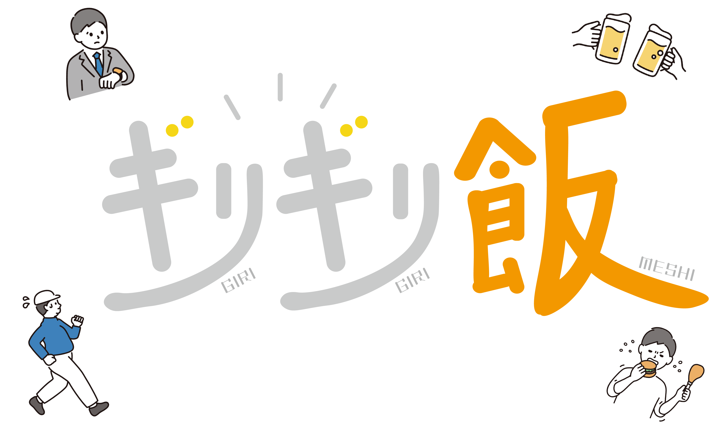

やったこと
- ハッカソンに出ている
- Beatさん、タカバヤさんがチームメンバー
2人が怒涛の勢いで事前開発してくれていたので僕は全く仕事をしていなかったのに事なきを得ている（？）
ので、呑気にロゴ作ってみたいな〜と思っていたためイラレをぶん回していた。
こういう感じのイメージを書いて、
こういう感じになった。なんか上手くできた気になっている。
手を動かすと詳しくなりたい〜できるようになりたい〜と言った欲求が高まるんだけど、こういう欲求を丁寧に整理して時間を無駄にしないで努力を積み上げる方法みたいなのが自分の中で確立すると良いと思う...（無計画にバタバタと生きてるので）